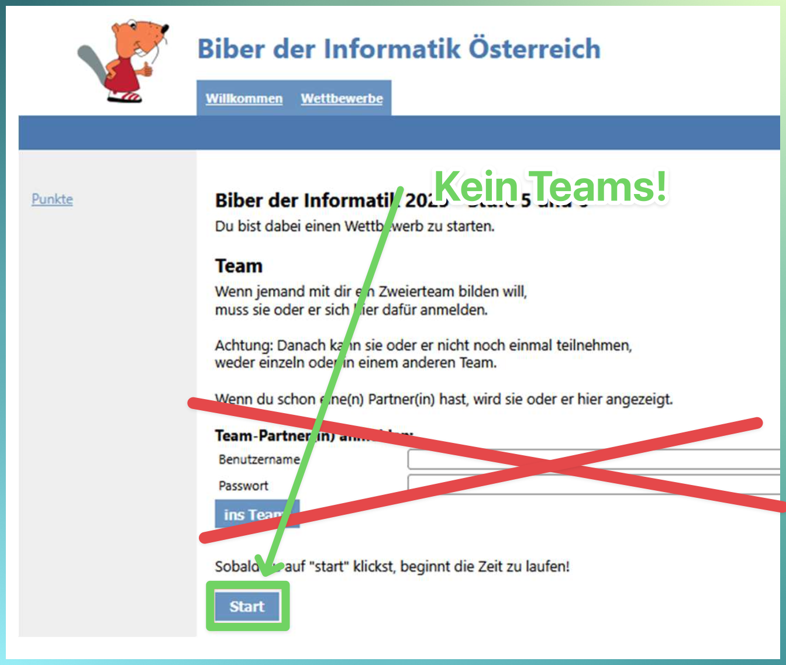
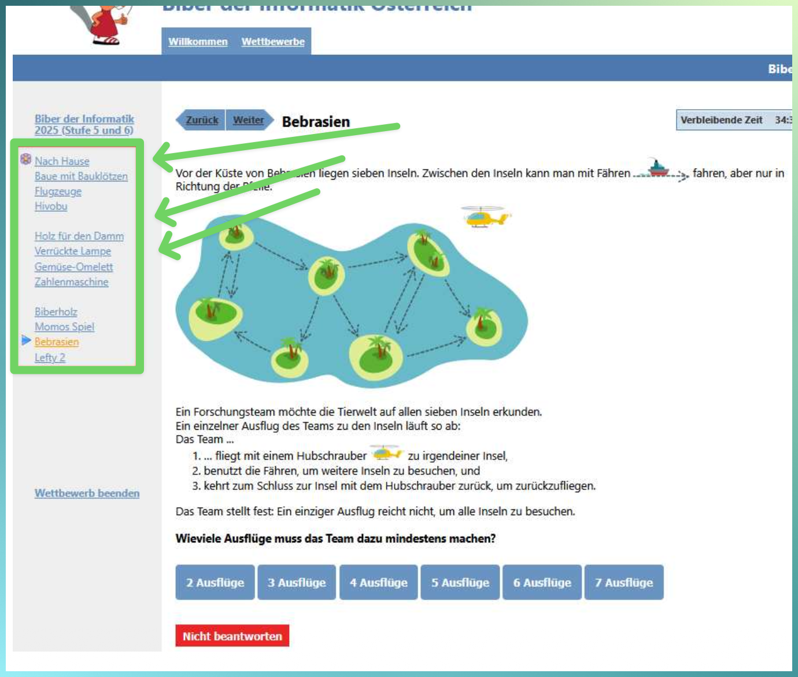
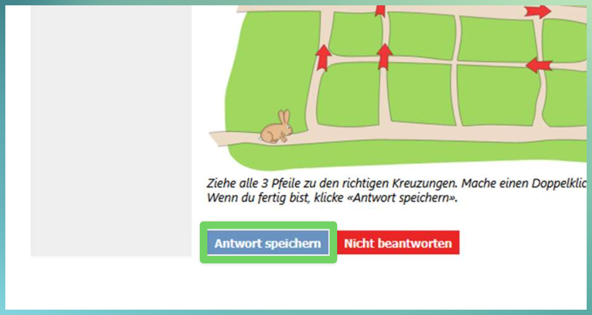
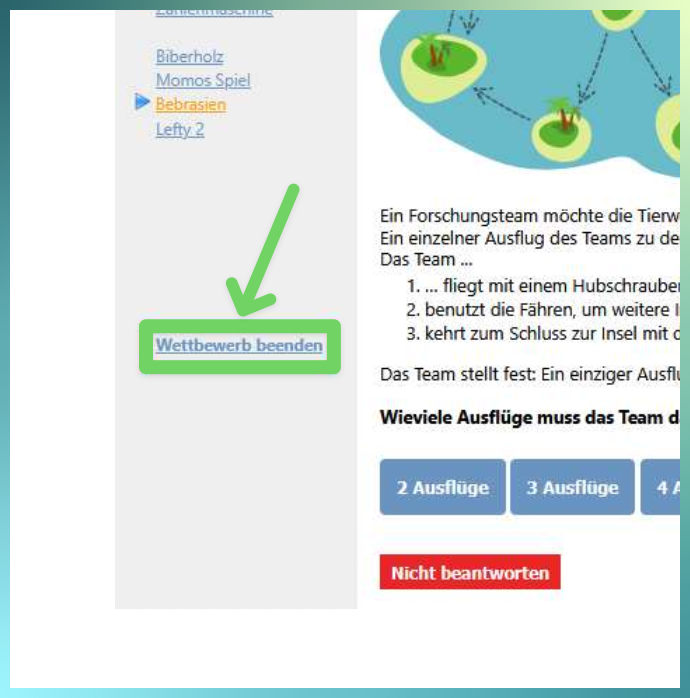
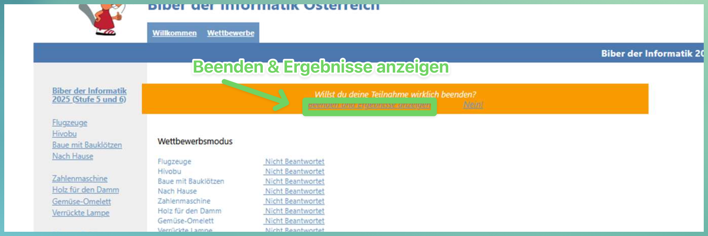

So machst du bei Biber der Informatik mitHow to take part in Biber der Informatik
Zur Anmeldung beim echten Biber-Wettbewerb →Open the real Biber competition login →Anmelden und startenSign in and start
- Öffne die Anmeldeseite über den Link oben. Gib die Biber-Zugangsdaten von uns ein und klicke auf Anmelden.
- Klicke auf Wettbewerbe (je nach Ansicht „Wettbewerb“). Wähle den echten Wettbewerb ganz oben, nicht einen Probewettbewerb. Wähle die von der Lehrkraft zugewiesene Schulstufe. Wenn du unsicher bist, frage vor der Auswahl: Die Stufenwahl lässt sich nicht rückgängig machen.
- Die Team-Felder auf der Biber-Seite sind für eine zweite teilnehmende Person. Lass sie leer und starte einzeln: Klicke auf Start. Jetzt beginnt dein Versuch und die Zeit läuft.
- Open the login page using the link above. Enter the Biber login details we give you and click Anmelden (“Sign in”).
- Click Wettbewerbe (“Competitions”; sometimes “Wettbewerb”). Choose the real competition at the top, not a practice competition. Choose the school level assigned by your teacher. If unsure, ask before selecting it: the level selection cannot be undone.
- The Team fields on the Biber page are for a second participant. Leave them blank and start individually: click Start. Your attempt begins and the timer starts.


Aufgaben bearbeiten und Antworten speichernWork through the tasks and save your answers
- Links findest du die Liste aller Fragen. Bereits beantwortete Fragen sind mit einer Blume gekennzeichnet.
- Du kannst zwischen den Fragen wechseln, Aufgaben überspringen und deine Antworten während des Wettbewerbs jederzeit ändern.
- Gibt es die Schaltfläche Antwort speichern? Dann klicke darauf, bevor du die nächste Frage öffnest. Ohne diese Schaltfläche wird die Antwort automatisch gespeichert.
- The list of all questions is on the left. Answered questions are marked with a flower.
- You can move between questions, skip tasks, and change your answers at any time during the competition.
- Is there an Antwort speichern (“Save answer”) button? Click it before opening the next question. If there is no such button, your answer is saved automatically.


Kontrollieren, beenden und uns dein Ergebnis zeigenCheck, finish, and show us your result
- Kontrolliere vor dem Beenden alle Antworten noch einmal.
- Klicke auf Wettbewerb beenden und danach oben auf Beenden und Ergebnisse anzeigen.
- Lass die Ergebnisseite offen und heb die Hand oder deinen Daumen, damit wir kommen und dein Ergebnis sehen können. Falls noch keine Punkte angezeigt werden, zeige uns die Abschlussseite.
- Nachdem wir dein Ergebnis gesehen haben: Mache mit der nächsten Aufgabe deiner Lehrkraft weiter. Falls sie in Teams steht, gehe jetzt dorthin zurück.
- Check all your answers once more before finishing.
- Click Wettbewerb beenden (“Finish competition”), then Beenden und Ergebnisse anzeigen (“Finish and show results”) at the top.
- Keep the results page open and raise your hand or give us a thumbs-up so we can come and see your result. If no score is shown yet, show us the completion page.
- After we have seen your result: Continue with the next task assigned by your teacher. If it is in Teams, return there now.

